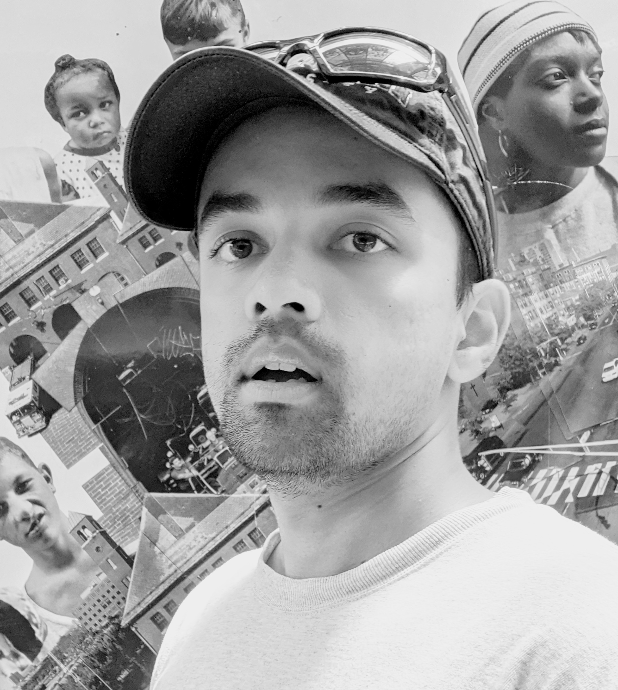

|  |
School of Computing & AI, Arizona State University tgokhale at asu dot edu Papers ♦ Semantic Scholar ♦ Google Scholar ♦ CV (.pdf) ♦ V&L Seminar Series ♦ Reading Group |
RESEARCH
I work with Yezhou Yang and Chitta Baral at ASU, and closely collaborate with Rushil Anirudh at Lawrence Livermore National Laboratories. I received my MS in ECE from Carnegie Mellon University, where I worked with Aswin Sankaranarayanan.
The main focus of my Ph.D. is on robust visual understanding, targetting problems such as domain generalization, robustness to logical, semantic, and linguistic shifts, robustness to common corruptions, geometric transformations, etc. The solutions that I have developed towards this end fall under two main categories:
- Knowledge-guided design of input augmentation functions
- Adversarially-guided discovery of input transformations
AFFILIATIONS |
|
|
|
|
|
|
| Lawrence Livermore National Laboratory Summer 2020, 2021 |
Arizona State University 2018-present |
Carnegie Mellon University 2016-2018 |
Snap Inc. Research Summer 2018 |
BITS Pilani 2011-2015 |
IEEE Eta Kappa Nu 2017-present |
SELECTED PUBLICATIONS

|
Weakly Supervised Relative Spatial Reasoning for Visual Question Answering
Pratyay Banerjee, Tejas Gokhale, Yezhou Yang, Chitta Baral [Paper] VQA models trained with two additional objectives: object centroid estimation and relative position estimation, lead to improved performance on spatial reasoning questions (in GQA) in fully supervised and few shot settings as well as improved O.O.D. generalization. |

|
WeaQA: Weak Supervision via Captions for Visual Question Answering
Pratyay Banerjee, Tejas Gokhale, Yezhou Yang, Chitta Baral [Paper] We show that models can be trained without any human-annotated Q-A pairs, but only with images and associated text captions. Our experiments suggest gains on benchmark with shifted priors (VQA-CP) over baselines which use full supervision from human-authored QA data. |

|
HalluciNet: Scene Completion by Exploiting Object Co-occurrence Relationships
Kuldeep Kulkarni, Tejas Gokhale, Rajhans Singh, Pavan Turaga, Aswin Sankaranarayanan [Paper] Scene completion from sparse and incomplete label maps. `Halluci-Net' is a 2-stage method that captures the object co-occurrence relationships, to produce dense label maps from incomplete labelmaps and object boundaries, for image synthesis. |

|
Self-Supervised Test-Time Learning for Reading Comprehension
Pratyay Banerjee, Tejas Gokhale, Chitta Baral [Paper] Unsupervised Reading Comprehension method that operates directly on a single test passage. Synthetic QA pairs are generated from the passage, and models are trained on these. When a new human-authored test question appears, models infer answers better than previous unsupervised methods. |

|
Attribute-Guided Adversarial Training for Robustness to Natural Perturbations
Tejas Gokhale, Rushil Anirudh, Bhavya Kailkhura, Jayaraman Thiagarajan, Chitta Baral, Yezhou Yang [Paper] An adversarial training approach which learns to generate new samples so as to maximize exposure of the classifier to attributes-space. Studies robustness to semantic shifts that are beyond L-p norm perturbations, on 3 types of naturally occurring perturbations --- object-related shifts, geometric transformations, and common image corruptions. |

|
MUTANT: A Training Paradigm for Out-of-Distribution Generalization in Visual Question Answering
Tejas Gokhale*, Pratyay Banerjee*, Chitta Baral, Yezhou Yang, [Paper] MUTANT is a training paradigm that exposes VQA models to perceptually similar, yet semantically distinct mutations of the input image or question. We use a pairwise consistency loss between answers to original and mutant inputs as a regularization, along with an answer embedding NCE loss. MUTANT establishes a new SOTA (+10%) on the VQA-CP challenge (for generalization under Changing Priors) |

|
Video2Commonsense: Generating Commonsense Descriptions to Enrich Video Captioning
Zhiyuan Fang* Tejas Gokhale*, Pratyay Banerjee, Chitta Baral, Yezhou Yang, [Website], [Paper] Actions in videos are inherently linked to latent social and commonsense aspects. We present the first work on generating commonsense captions directly from videos, to describe latent intentions, attributes, and effects of humans in videos. Additionally we explore the use of open-ended video-based commonsense question answering (V2C-QA) as a way to enrich our captions. |

|
VQA-LOL: Visual Question Answering under the Lens of Logic
Tejas Gokhale*, Pratyay Banerjee*, Chitta Baral, Yezhou Yang, [Website], [Paper], [Video] VQA models struggle at negation, antonyms, conjunction, disjunction! We show a capability of answering logically composed questions with our novel modules and datasets, while retaining performance on VQA data. |

|
Cooking With Blocks : A Recipe for Visual Reasoning on Image-Pairs
Tejas Gokhale, Shailaja Sampat, Zhiyuan Fang, Yezhou Yang, Chitta Baral, [Website], [Longer Preprint], [CVPR-VMC Paper] Given two images (source, target) with different object configurations, what is the sequence of steps to re-arrange source to match target? For this reasoning task, our modular approach that contains a visual encoder and an event-sequencer/planner, and exhibits inductive generalization. |
PEOPLE
Collaborators:
- (ASU)
- (CMU / Adobe)
- (LLNL)
| Zhiyuan Fang, Pratyay Banerjee, | |
| Kuldeep Kulkarni, | |
| Rushil Anirudh, Bhavya Kailkhura, Jay Thiagarajan |
Mentees:
- (MS Research)
- (ASU FURI)
- (BS Capstone)
| Adela Shao (2021- ), Maitreya Patel (2021- ), Abhishek Chaudhary (2020-2021 AY) → Amazon, Arnav Chakravarthy (2020-2021 AY) → VMWare, Aadhavan Sadasivam (2019-20 AY) &→ PayPal, Shivakshit Patri (2019 Spring) → Amazon | |
| Mertay Dayanc (2020) | |
| Paul Butler (2019-20 AY) → Microsoft, Jace Lord, Sagarika Pannase, Aashwin Ranjan, William Tith. |
SERVICE
- Reviewer:
- Organizer / Host:
- Advisor:
- Volunteer:
- Research Mentor:
- Teaching:
- Student Mentor:
| ICLR 2022, AAAI 2022, AAAI 2021 EMNLP 2021, NAACL 2021, ICRA 2019, 2020, 2021, IEEE RA-L, WACV 2022, Springer MVAP | |
| Spring 2021 Seminar Series (Frontiers in Vision and Language), Summer Vision Reading Group | |
| ASU ML Club | |
| ICML 2020, SWRS 2019 | |
| ASU FURI, CSE485 Capstone (Cognitive Vision, Vision&Language) | |
|
ASU CSE310: Data Structures and Algorithms (Taught Recitations), ASU CSE408: Multimedia Information Systems (TA), ASU CSE110: Principles of Programming (Taught Labs), ASU CSE576: Natural Language Processing (Mentored Class Projects), BITS CTE: Advanced Image Processing (co-Instructor). |
|
|
Graduate Student Mentorship Program (GSMP), ASU, 2019-present.
Peer Mentorship Program (first installment), BITS Goa, 2014 |
AWARDS
Scholarships / Fellowships:
- CIDSE Doctoral Fellowship (ASU, Spring 2020, Spring 2021)
- Engineering Graduate Fellowship (ASU, Spring 2020)
- National Talent Scholarship, (Govt. of India, 2007-2015)
Travel Awards
- Graduate College Travel Award, ASU (for ICCV 2021, EMNLP 2020, ECCV 2020)
- IJCAI Doctoral Consortium Travel Award, (IJCAI, 2019)
- CIDSE Travel Grant Award, (for CVPR 2019)
Societies / Memberships
- Inducted, Eta Kappa Nu Sigma Chapter (Carnegie Mellon University, 2017)
- Member, Computer Vision Foundation, Association for Computational Linguistics, Association for the Advancement of Artificial Intelligence